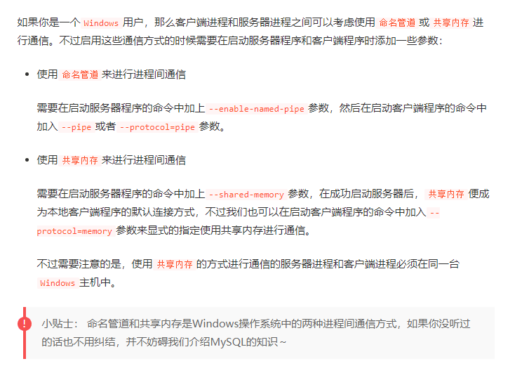
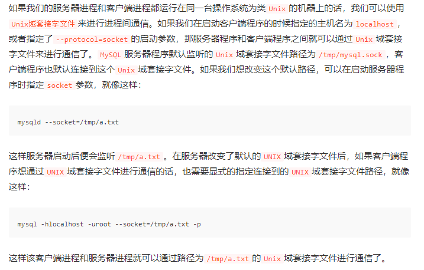

mysql服务端与客户端常见的连接方式有三种：
1.TCP/IP连接,这是我们目前经常采用的方式
2.命名管道和共享内存

命名管道和共享内存.png
3.Unix域套接字文件

Unix域套接字文件.png
mysql的启动连接有长短命令，最初是长命令，为了方便改为短命令
常见长短命令的对应关系
| 参数名 | 含义 |
|---|---|
| -h | 表示服务器进程所在计算机的域名或者IP地址，如果服务器进程就运行在本机的话，可以省略这个参数，或者填localhost或者127.0.0.1。也可以写作 –host=主机名的形式 |
| -u | 表示用户名。也可以写作 –user=用户名的形式 |
| -p | 表示密码。也可以写作 –password=密码的形式 |
| -P | 表示端口，也可以写作–port端口 |
| -V | 表示版本信息，也可以写作–version |
mysql的命令参数优先级
不同文件的相同参数
命令行指定参数>my.cnf>其他配置文件
同文件的相同参数
以出现在最后的位置为准
defaults-extra-file参数可以指定额外的配置文件搜索路径
mysql索引的存储方式
mysql索引采用的存储方式为B+树